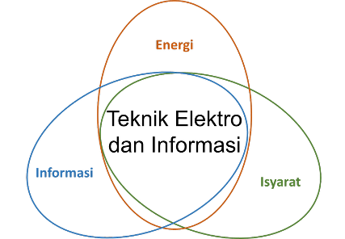
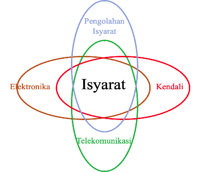
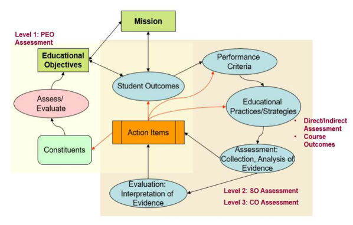

2 Struktur Kurikulum
2.1 Rumusan Profil Lulusan (PL)
Pengembangan kurikulum Program Magister Program Studi Teknik Elektro (PMPSTE) dilakukan agar tetap memenuhi visi dan misi program studi dengan memperhatikan kondisi departemen, sumber daya, dan pengguna lulusan. Kurikulum disusun secara lengkap mencakup profil lulusan, capaian pembelajaran lulusan, pemetaan capaian pembelajaran lulusan terhadap bahan kajian dan mata kuliah. Tabel 2.1 menunjukkan profil lulusan PMPSTE yang akan dituju dengan Kurikulum 2022 Versi Revisi-2.
| No | Profil Lulusan | Deskripsi Profil |
|---|---|---|
| 1. | Akademisi dan/atau peneliti | a. Menjadi Peneliti yang kompeten di bidangnya, mampu bekerja-sama dalam tim maupun secara individu, menjunjung tinggi standar etika ilmiah, dan bersemangat dalam belajar sepanjang hayat. b. Menjadi Akademisi yang kompeten di bidangnya dan memiliki jiwa kepemimpinan yang baik, standar etika yang tinggi dan pembelajaran seumur hidup dalam suatu instansi pendidikan, misalnya universitas, politeknik, dan institut. |
| 2. | Profesional | a. Profesional yang mampu mengatasi permasalahan di industri sesuai dengan bidangnya berdasarkan cara berpikir yang terstruktur dan ilmiah, mampu mengungkapkan ide-idenya secara efektif, dan dapat bekerja dalam tim maupun secara individu. b. Pegawai yang profesional di bidangnya yang mampu memadukan Teknik Elektro dengan aspek-aspek manajemen lainnya sehingga dapat memaksimalkan pencapaian tujuan instansi pemerintahan. |
2.2 Rumusan Standar Kompetensi Lulusan (SKL) dan Capaian Pembelajaran Lulusan (CPL)
2.2.1 Standar Kompetensi Lulusan (SKL)
SKL Program Magister Program Studi Teknik Elektro (PMPSTE) menjabarkan mengenai standar kompetensi yang dimiliki oleh lulusan yang akan menjadi profil profesional yang dimiliki setelah mereka menjadi alumni dengan durasi berkisar tiga hingga lima tahun. Dengan mempertimbangkan visi dan misi UGM (sebagaimana dijelaskan di Bab 1), jenjang KKNI dan SNPT serta masukan dari alumni, pengguna, ataupun advisory boards terkait, terdapat dua standar kompetensi lulusan (SKL) yang diharapkan:
#SKL1 Karakter (Character): Memiliki jiwa kepemimpinan yang baik, standar etika yang tinggi dan pembelajaran seumur hidup untuk menjaga keunggulan dalam inovasi. (Having a strong leadership, high standard of ethics, and lifelong learning to maintain excellence in innovation.)
#SKL2 Karir (Career): Sukses dalam karier teknik/rekayasa atau karier profesional yang bercirikan integritas dalam aspek kompetensi di bidang teknik elektro dengan kapabilitas penelitian yang kuat, profesionalisme, komunikasi yang efektif dan nilai-nilai kemanusiaan yang universal. (Be successful in a technical or professional career characterized by having integrity in the aspect of electrical engineering competency with strong research capabilities or related field by fulfilling professionalism, effective communication, and universal value of humanity).
Visi dan misi Fakultas Teknik UGM menekankan pentingnya pendidikan teknik yang berkontribusi pada kemandirian bangsa, nilai-nilai kemanusiaan, dan budaya bangsa berdasarkan Pancasila. Nilai-nilai ini sejalan dengan SKL Program Magister Teknik Elektro, yaitu SKL1 (Karakter) yang mencakup kepemimpinan, etika tinggi, dan semangat pembelajaran sepanjang hayat, serta SKL2 (Karir) yang menekankan keberhasilan karier profesional dengan kompetensi teknik, kemampuan riset, profesionalisme, komunikasi efektif, dan nilai-nilai kemanusiaan. Relasi PEO dengan visi dan misi Fakultas Teknik UGM dijelaskan lebih lanjut pada Tabel 2.2.
| No | PEO | Visi Fakultas Teknik UGM | Misi Fakultas Teknik UGM |
|---|---|---|---|
| 1. | Akademisi dan/atau Peneliti | Sejalan dengan visi untuk penguatan peradaban baru dan kemandirian bangsa melalui kontribusi keilmuan dan riset yang berorientasi pada kemanusiaan. | a. Mencetak SDM beretika dan mumpuni dalam ilmu teknik. b. Mengembangkan IPTEK yang bermanfaat. c. Melakukan pengabdian yang berbasis budaya bangsa. |
| ● Peneliti | Mendorong kontribusi dalam IPTEK global dan pelambatan entropi dunia lewat inovasi riset. | a. Menyebarluaskan ilmu teknik berbasis riset. b. Mengembangkan kreativitas dan pengabdian. |
|
| ● Akademisi | Menopang penguatan peradaban lewat pendidikan tinggi teknik yang bernilai budaya dan berbasis Pancasila. | a. Pendidikan teknik untuk SDM unggul. b. Tata kelola organisasi yang agile dan berintegritas. |
|
| 2. | Profesional | Berkontribusi terhadap kemandirian dan kedaulatan bangsa melalui solusi teknik yang aplikatif dan terintegrasi dengan sektor industri dan pemerintahan. | a. Menghasilkan lulusan profesional di bidang teknik b. Melaksanakan pengabdian sesuai kebutuhan bangsa. c. Membangun kerja sama luas, termasuk industri. |
| ● Profesional Industri | Mendukung pembangunan nasional berbasis keilmuan teknik dan nilai kemanusiaan. | a. Pendidikan teknik untuk pengabdian masyarakat. b. Pengabdian berbasis budaya bangsa. |
|
| ● Profesional Pemerintahan | Mendorong tata kelola teknik dan manajemen publik yang inovatif untuk kepentingan bangsa. | a. Kolaborasi dengan lembaga dalam dan luar negeri. b. Tata kelola organisasi yang agile dan taat asas. |
Profil lulusan PMPSTE dirumuskan berdasarkan visi-misi tersebut, serta mengacu pada jenjang KKNI, SNPT, dan masukan dari alumni, pengguna, serta advisory board. Lulusan dipersiapkan untuk menjadi akademisi, peneliti, atau profesional yang kompeten, etis, dan inovatif, serta mampu berkontribusi secara nyata di berbagai sektor teknik dan kemasyarakatan, baik di tingkat nasional maupun global. Detail perbandingan SKL dan profil lulusan PMPSTE ditunjukkan pada Tabel 2.3.
| Standar Kompetensi Lulusan (SKL) | Profil Lulusan | Kesesuaian/Relevansi |
|---|---|---|
| SKL 1 – Karakter | Akademisi dan peneliti yang etis: mampu mengembangkan pengetahuan melalui riset, menjunjung tinggi etika akademik dan integritas. | Penekanan pada karakter, etika, dan pembelajaran berkelanjutan. |
| Profesional inovatif: memiliki tanggung jawab sosial dan profesional dalam praktik teknik. | Relevan dengan nilai kemanusiaan dan budaya bangsa berbasis Pancasila. | |
| SKL 2 – Karir | Peneliti unggul: menghasilkan penelitian yang berdampak, baik nasional maupun global. | Selaras dengan SKL 2 yang mendukung karier profesional dalam riset dan inovasi. |
| Praktisi profesional: mampu memecahkan permasalahan teknik kompleks secara mandiri dan kolaboratif. | Berkaitan dengan profesionalisme, kompetensi teknis, dan komunikasi. | |
| Akademisi yang mampu mendidik: menyampaikan ilmu pengetahuan secara efektif dan inspiratif. | Mendukung pengembangan karier sebagai dosen/pendidik sesuai jenjang KKNI. |
PMPSTE pada dasarnya melanjutkan apa yang telah direncanakan pada program sarjana di Departemen Teknik Elektro dan Teknologi Informasi (DTETI), FT UGM. Hal ini mempertimbangkan kesinambungan antar jenjang kependidikan antara program sarjana dan magister yang ada di departemen. Perbedaan antara SKL PMPSTE dengan sarjana terletak pada kemampuan lulusan untuk melakukan penelitian dengan metodologi yang tepat serta mampu mencari solusi permasalahan secara lebih komprehensif. Komite Kurikulum dan Pengurus DTETI FT UGM menilai bahwa kemampuan untuk memimpin (leadership), memiliki standar etika dan integritas yang tinggi, serta kemauan untuk belajar sepanjang hayat (lifelong learning) menjadi modal utama yang berharga untuk membentuk alumni yang mampu beradaptasi dengan kompleksitas dunia kerja dan perkembangan teknologi yang sangat pesat di bidang teknik elektro. Hal-hal tersebut terangkum dalam SKL yang pertama, yakni Karakter (Character). Selain hal-hal tersebut, lulusan DTETI FT UGM juga perlu menguasai ilmu-ilmu dasar dengan baik dan memiliki kompetensi yang sesuai dengan bidang ilmu yang ditekuni. Hal-hal tersebut terangkum dalam SKL yang kedua, yakni Karier (Career). Untuk mendukung terciptanya profil lulusan yang memiliki karakter dan karier yang kuat, Komite Kurikulum dan Pengurus DTETI FT UGM menyusun nilai-nilai (values) yang menjadi acuan dosen, mahasiswa, dan tenaga kependidikan dalam melaksanakan kegiatan belajar-mengajar, bekerja sama, dan berinteraksi di DTETI FT UGM. Nilai-nilai tersebut dirumuskan dalam jargon “ETHOS for Integrity”, dengan penjelasan sebagai berikut:
Excellence: sivitas akademika DTETI FT UGM tidak hanya memastikan bahwa tugas dan amanah selesai dilaksanakan, tapi juga berusaha menyempurnakan, serta menjadi yangterbaik dan berdedikasi tinggi di bidang yang mereka tekuni.
Teamwork: sivitas akademika DTETI menyadari bahwa mampu bekerja dalam tim adalah ruh dari sebuah organisasi yang tidak hanya mampu melaksanakan fungsinya, tapi mampu membawa perubahan dan menginspirasi lingkungan sekitarnya.
Harmony: sivitas akademika DTETI menyadari bahwa kesuksesan dapat dicapai dengan tetap memperhatikan harmoni dan keseimbangan, keseimbangan antara pekerjaan dan keluarga, keseimbangan antara hak dan kewajiban, keseimbangan antara kesehatan jiwa dan kesehatan raga.
Optimistic: sivitas akademika DTETI selalu melihat seluruh tantangan dengan penuh optimis, sebab mereka meyakini bahwa tidak ada kata gagal, yang ada adalah belajar dan sukses.
Smart: sivitas akademika DTETI menjadi sumber inspirasi dengan berbagai inovasi, berusaha berkontribusi untuk menyelesaikan permasalahan masyarakat dan bangsa, menjadi bagian dari solusi, bukan bagian dari masalah.
Integrity: sivitas akademika DTETI memiliki keyakinan yang kuat akan nilai-nilai moral yang menjadi acuan bekerja di ranah profesional serta bekerja sama dalam bingkai berbangsa dan bernegara.
Dua SKL di atas, Karier (Carrier) dan Karakter (Character), pada praktiknya diturunkan menjadi enam buah capaian pembelajaran lulusan (CPL) agar lebih mudah untuk didefinisikan dan dioperasionalkan. CPL akan dijelaskan lebih detail pada bagian selanjutnya.
2.2.2 Capaian Pembelajaran Lulusan (CPL)
Fakultas Teknik, sebagai struktur vertikal di atas Program Magister Program Studi Teknik Elektro (PMPSTE) menetapkan tiga CPL yaitu,
menguasai pengetahuan dan wawasan yang luas dalam rangka pengembangan ilmu pengetahuan dan teknologi melalui riset atau penciptaan karya inovatif bidang keteknikan,
menerapkan dan mengembangkan pengetahuan dan wawasan untuk pemecahan masalah dalam lingkungan baru pada konteks multidisiplin yang luas,
mengkomunikasikan secara efektif pengetahuan, wawasan dan karya keteknikan pada komunitas akademik dan umum.
Amanat dari FT dipertegas dengan detail oleh PMPSTE dengan menetapkan kata-kata kunci penciri lulusan sebagai berikut:
solusi keteknikan (engineering solution),
data, eksperimen, dan pemodelan (data, experiments and modeling),
komunikasi yang efektif (effective communication),
kerja sama tim, kepemimpinan, dan kemampuan mengelola tim (teamwork, leadership and managerial),
etika profesional (professional ethics),
pembelajaran berkelanjutan (sustainable learning).
Sehingga disusunlah CPL PMPSTE dengan rincian sebagaimana ditunjukkan pada Tabel 2.4.
| Kode | Topik | Deskripsi |
|---|---|---|
| CPL 1 | Solusi Keteknikan (Engineering Solution) | 1. Menguasai pengetahuan dan wawasan yang luas dan terkini dalam rangka pengembangan ilmu pengetahuan dan teknologi melalui riset atau penciptaan karya inovatif bidang keteknikan berbasis ilmu teknik elektro. (CPLFT1) 2. Menerapkan dan mengembangkan pengetahuan dan wawasan untuk pemecahan masalah kompleks dalam lingkungan baru pada konteks multidisiplin yang luas. (CPLFT2) |
| CPL 2 | Data, Eksperimen, dan Pemodelan (Data, Experiments and Modeling) | Kemampuan untuk membangun model untuk merancang dan melakukan eksperimen untuk mengeksplorasi masalah rekayasa yang kompleks serta menganalisis dan menginterpretasikan data. |
| CPL 3 | Komunikasi yang Efektif (Effective Communication) | Mengkomunikasikan secara efektif pengetahuan, wawasan, dan karya keteknikan pada komunitas akademik dan umum. (CPLFT3) |
| CPL 4 | Kerja sama Tim, Kepemimpinan, dan Mengelola Tim (Teamwork, leadership and Managerial) | Profesional dan tanggung jawab yang lebih besar, dan/atau dengan transisi ke posisi kepemimpinan dalam bisnis, pemerintahan, mengelola tim. Kemampuan untuk memiliki peran secara efektif dalam memimpin dan mengelola kerja di dalam tim untuk mencapai tujuan bersama. |
| CPL 5 | Etika Profesional (Professional Ethics) | Kemampuan untuk memahami nilai-nilai etika dan berkomitmen pada norma, tanggung jawab dan etika profesi. |
| CPL 6 | Pembelajaran Berkelanjutan (Sustainable Learning) | Kemampuan untuk memahami pentingnya pembelajaran seumur hidup dan mampu melaksanakannya. |
Penentuan mata kuliah dalam kurikulum PMPSTE dilakukan dengan mempertimbangkan pencapaian CPL. Setiap mata kuliah dirancang untuk mendukung penguasaan pengetahuan dan keterampilan yang relevan, mulai dari kemampuan menyelesaikan masalah teknik kompleks (CPL 1), merancang eksperimen dan menganalisis data (CPL 2), hingga mengomunikasikan hasil secara efektif (CPL 3). Selain itu, aspek kepemimpinan dan kerja tim (CPL 4), etika profesional (CPL 5), serta pembelajaran sepanjang hayat (CPL 6) juga diintegrasikan melalui pembelajaran berbasis proyek, riset mandiri, dan kolaborasi multidisiplin. Dengan demikian, kurikulum dirancang secara holistik untuk menghasilkan lulusan yang kompeten, adaptif, dan profesional. Kaitan antara mata kuliah dan CPL secara detail dijelaskan pada Tabel 2.17 dan Tabel 2.17. Sesuai peraturan No. 073 Tahun 2013 yang diterbitkan oleh Menteri Pendidikan dan Kebudayaan, CPL harus mengacu pada jenjang kualifikasi KKNI dan SNPT. CPL terdiri dari unsur sikap, keterampilan umum, keterampilan khusus, dan pengetahuan. Unsur sikap dan keterampilan umum mengacu pada SPT sebagai standar minimal, yang memungkinkan ditambah oleh program studi untuk memberi ciri lulusan perguruan tingginya. Sedangkan unsur keterampilan khusus dan pengetahuan dirumuskan dengan mengacu pada deskriptor KKNI sesuai dengan jenjang pendidikannya. Hubungan CPL dengan standar SNPT dapat dilihat pada Tabel 2.5 berikut.
| CPL | Sikap | Pengetahuan | Keterampilan Umum | Keterampilan Khusus |
|---|---|---|---|---|
| Solusi Keteknikan (Engineering Solution) | X | |||
| Data, Eksperimen, dan Pemodelan (Data, Experiments and Modeling) | X | |||
| Komunikasi yang Efektif (Effective Communication) | X | |||
| Kerja sama Tim, Kepemimpinan, dan Mengelola Tim (Teamwork, Leadership and Managerial) | X | |||
| Etika Profesional (Professional Ethics) | X | |||
| Pembelajaran berkelanjutan (Sustainable Learning) | X |
Menurut Peraturan Presiden Republik Indonesia No. 8 Tahun 2012 tentang Kerangka Kualifikasi Nasional Indonesia (KKNI) Pasal 5(g), lulusan Magister Terapan dan Magister paling rendah setara dengan jenjang kedelapan. Oleh karena itu, CPL yang akan dicapai oleh program studi harus merepresentasikan deskripsi jenjang kualifikasi KKNI ke-8. Adapun matriks yang menunjukkan relasi antara CPL dan jenjang KKNI ke-8 ditunjukkan oleh Tabel 2.6.
| CPL | Mampu mengembangkan pengetahuan, teknologi, dan atau seni di dalam bidang keilmuannya atau praktik profesionalnya melalui riset, hingga menghasilkan karya inovatif dan teruji. | Mampu memecahkan permasalahan sains, teknologi, dan atau seni di dalam bidang keilmuannya melalui pendekatan inter atau multidisipliner. | Mampu mengelola riset dan pengembangan yang bermanfaat bagi masyarakat dan keilmuan, serta mampu mendapat pengakuan nasional atau internasional. |
|---|---|---|---|
| Solusi Keteknikan (Engineering Solution) | X | ||
| Data, Eksperimen, dan Pemodelan (Data, Experiments and Modeling) | X | ||
| Komunikasi yang Efektif (Effective Communication) | X | ||
| Kerja sama Tim, Kepemimpinan, dan Mengelola Tim (Teamwork, Leadership and Managerial) | X | ||
| Etika Profesional (Professional Ethics) | X | ||
| Pembelajaran berkelanjutan (Sustainable Learning) | X |
Adapun kesetaraan CPL PMPSTE dengan CPL yang sesuai standar penjaminan mutu program studi, dalam hal ini Washington Accord disajikan di Tabel 2.7.
| CPL | Fundamental and Engineering Knowledge | Development of Engineering Solution | Engineering Design | Data and Experiments | Modern Tools Utilization | Knowledge Contemporary and Issues |
|---|---|---|---|---|---|---|
| Solusi Keteknikan (Engineering Solution) | X | X | X | X | ||
| Data, Eksperimen, dan Pemodelan (Data, Experiments and Modeling) | X | |||||
| Komunikasi yang Efektif (Effective Communication) | ||||||
| Kerja sama Tim, Kepemimpinan, dan Mengelola Tim (Teamwork, Leadership and Managerial) | ||||||
| Etika Profesional (Professional Ethics) | ||||||
| Pembelajaran berkelanjutan (Sustainable Learning) | X |
Institute of Electrical and Electronic Engineering (IEEE) sebagai organisasi profesional bidang teknik elektro internasional terbesar di dunia tidak secara langsung menetapkan student outcomes khusus untuk program Magister Teknik Elektro, namun standar yang digunakan umumnya merujuk pada kriteria ABET (Accreditation Board for Engineering and Technology). Dalam konteks ini, student outcomes mencakup kemampuan menyelesaikan masalah teknik kompleks, merancang solusi yang beretika dan berkelanjutan, berkomunikasi secara efektif, memiliki kesadaran etis dan profesional, bekerja dalam tim, melakukan eksperimen serta analisis data, dan mampu belajar secara mandiri untuk beradaptasi dengan kebutuhan profesional. Matriks penyelarasan antara CPL dengan ABET ditunjukkan pada Tabel 2.8.
| CPL | Deskripsi CPL | Selaras dengan ABET (MS-Level Outcomes) | Kesesuaian |
|---|---|---|---|
| CPL 1 | Mampu mengembangkan pengetahuan, teknologi, dan/atau seni di dalam bidang keilmuannya atau praktik profesionalnya melalui riset, hingga menghasilkan karya inovatif dan teruji. | ● An ability to apply advanced knowledge in a specialized area of engineering. ● An ability to conduct research or apply advanced techniques to solve complex engineering problems. |
CPL ini menekankan riset dan inovasi, selaras dengan kemampuan riset lanjutan dan penguasaan bidang spesifik di ABET. |
| CPL 2 | Mampu memecahkan permasalahan sains, teknologi, dan/atau seni di dalam bidang keilmuannya melalui pendekatan inter atau multidisipliner. | ● An ability to synthesize knowledge and apply it to solve interdisciplinary engineering problems. ● An ability to function on multidisciplinary teams. |
CPL ini fokus pada kemampuan lintas disiplin dan problem-solving, cocok dengan ABET yang menekankan sinergi keilmuan. |
| CPL 3 | Mampu mengelola riset dan pengembangan yang bermanfaat bagi masyarakat dan keilmuan, serta mampu mendapat pengakuan nasional atau internasional. | ● An understanding of professional and ethical responsibility. ● A recognition of the need for, and an ability to engage in life-long learning. ● An ability to communicate effectively. |
ABET tidak eksplisit menyebut “pengakuan nasional/internasional”, tapi CPL ini selaras dengan aspek kepemimpinan riset, dampak sosial, dan komunikasi dalam riset. |
Untuk jenjang magister, program studi juga diharapkan merumuskan outcomes tambahan yang mencerminkan penguasaan bidang secara mendalam dan kemampuan praktik profesional sesuai dengan nama programnya. Kerangka ini sejalan dengan tujuan IEEE dan ABET untuk memastikan lulusan memiliki kompetensi tinggi, profesionalisme, serta kesiapan untuk berkontribusi secara signifikan di dunia teknik dan teknologi, sesuai ABET Criteria for Accrediting Engineering Programs 2025–2026.
2.3 Penetapan Bahan Kajian
Kurikulum 2022 - Revisi 2 yang saat ini dijalankan PMPSTE dibangun selaras dengan kondisi perkembangan ilmu teknik elektro pada saat kurikulum tersebut dibuat serta peraturan pemerintah terkait pendidikan yang berlaku seperti Keputusan Menteri Pendidikan Nasional Nomor 232 tahun 2000 dan Nomor 045 Tahun 2002 yang mengamanatkan penyusunan kurikulum pendidikan tinggi berbasis kompetensi. Perkembangan terkini, baik pada bidang keilmuan, aturan kependidikan nasional, ketentuan akreditasi lokal maupun internasional, serta kondisi masyarakat secara global menuntut evaluasi kurikulum yang ada saat ini. Untuk itu, melalui serangkaian proses evaluasi dan mempertimbangkan masukan dari advisory board DTETI, kurikulum PMPSTE dipandang perlu untuk dilakukan langkah-langkah pembaharuan dan penyesuaian.
Pendidikan program magister teknik elektro pada PMPSTE didesain untuk mempersiapkan lulusan dengan kemampuan sebagai berikut.
Kemampuan untuk mengidentifikasi masalah teknik yang kompleks dan kemampuan menyelesaikannya berbasis ilmu teknik elektro dengan memanfaatkan teknologi terkini.
Kemampuan untuk membangun model untuk merancang dan melakukan eksperimen untuk mengeksplorasi masalah rekayasa yang kompleks serta menganalisis dan menginterpretasikan data.
Kemampuan untuk membuat karya ilmiah/laporan/dokumentasi, kemampuan untuk berkomunikasi secara lisan dengan efektif serta memberikan dan mengikuti instruksi secara jelas.
Profesional dan tanggung jawab teknik elektro yang lebih besar, dan/atau dengan transisi ke posisi kepemimpinan dalam bisnis, pemerintahan, mengelola tim. Kemampuan untuk memiliki peran secara efektif dalam memimpin dan mengelola kerja di dalam tim untuk mencapai tujuan bersama.
Kemampuan untuk memahami nilai-nilai etika dan berkomitmen pada norma, tanggung jawab dan etika profesi.
Kemampuan untuk mewujudkan pentingnya pembelajaran seumur hidup dan mampu melaksanakannya.
Keenam hal tersebut di atas selaras dengan deskripsi jenjang kualifikasi yang disebutkan pada Lampiran Peraturan Presiden Republik Indonesia Nomor 8 Tahun 2012 di mana program magister menempati level delapan dalam KKNI.
Kemampuan riset mahasiswa diasah dalam dua konsentrasi:
Sistem Tenaga Listrik (STL), dan
Sistem Isyarat dan Elektronis (SIE).
Pengelompokan ini dilakukan dengan pertimbangan sebagai berikut:
Kemudahan dalam mengkonsolidasikan dan mengintegrasikan sumber daya yang ada, baik berupa kompetensi pendidik, ketersediaan penunjang pendidikan dan penelitian, serta hubungan dengan jejaring di luar.
Keluwesan dalam mengikuti perkembangan state of the art keilmuan di masing-masing bidang.
Kurikulum ini disusun dengan berlandaskan pada KKNI yang di dalamnya terkandung semangat outcome-based education. Atribut lulusan yang dicapai saat lulus telah sebangun dengan kompetensi profesional pada jenjang kualifikasi kedelapan pada KKNI.
Dari sisi ilmu, bidang teknik elektro dalam era modern telah berkembang pesat dan memberikan warna pada seluruh bidang ilmu lain. Hal ini mengakibatkan makin kaburnya batas-batas disiplin ilmu. Berkembangnya ilmu komputasi dan ilmu digital telah mengakibatkan pula munculnya tren baru yakni peranti virtual. Terkait hal tersebut, lulusan program PMPSTE dituntut tidak saja memiliki wawasan yang luas sehingga mampu memberikan sumbangsih dalam bidang ilmunya dan bidang ilmu yang lain. Selain itu, sarjana teknik elektro juga dituntut untuk memiliki kemampuan baru yakni mampu berinteraksi dengan peranti virtual dengan perantaraan rutin kode dan program untuk berinteraksi dengan peranti virtual tanpa harus kehilangan pemahaman atas konsep-konsep dasar bidang elektro.
Dari sudut pandang tantangan global, standarisasi kompetensi lulusan adalah aspek yang disoroti terutama terkait KKNI. Hal ini penting agar lulusan dapat bersaing untuk menghadapi pasar bebas dalam kerangka Masyarakat Ekonomi ASEAN (MEA), AFTA, bahkan hingga kompetensi global.
Dalam kerangka hal-hal yang telah tersebut di atas, Kurikulum 2022 Versi Revisi-1ini disusun. Di samping itu, dalam menetapkan Kurikulum PMPSTE 2025, tim kurikulum memperhatikan perpotongan (intersection)dengan program studi lain, khususnya keilmuan program studi serumpun seperti teknologi informasi, teknik komputer, dan lain-lain. Secara umum, keilmuan di teknik elektro memiliki tiga dimensi yaitu dimensi energi, isyarat, dan informasi. Keilmuan PMPSTE lebih banyak fokus di ranah energi dan isyarat. Dimensi informasi saat ini berkembang sangat pesat dan memiliki banyak bidang keilmuan yang tumbuh, seperti cyber security, software engineering, artificial intelligence, dan lain sebagainya, sehingga di DTETI tumbuh menjadi prodi tersendiri.Namun demikian, dimensi informasi ini tetap tidak bisa dipisahkan sepenuhnya dari keilmuan PMPSTE.
Ranah pertama yaitu energi menitikberatkan proses pembangkitan, transmisi, dan distribusi energi listrik dari pembangkit ke pelanggan dengan mempertimbangkan aspek ekonomis, keamanan, dan keandalan. Sedangkan ranah isyarat mencakup pengiriman informasi dari suatu tempat ke tampat lain. Dengan sudut pandang keilmuan di atas, PMPSTE memiliki dua buah konsentrasi yaitu Sistem Tenaga Listrik (STL) dan Sistem Isyarat dan Elektronis (SIE).


KDi bidang isyarat, dimensi keilmuan dapat dibagi lagi secara lebih detail. Ranah isyarat dibagi menjadi kelompok keilmuan yang lebih sempit yaitu pengolahan isyarat, elektronika, telekomunikasi, dan kendali. Masing-masing saling beririsan satu sama lain dengan konsentrasi yang lebih banyak ke subbidangnya masing-masing.
2.4 Penetapan Mata Kuliah
Kurikulum PMPSTE dijabarkan dalam bentuk mata kuliah dengan bobot keseluruhan 36 (tiga puluh enam) SKS. Pembagian bobot SKS mata kuliah PMPSTE dapat dilihat pada Tabel 2.9 Sedangkan untuk struktur mata kuliah untuk tiap semesternya dapat dilihat pada Tabel 2.10. Mata kuliah wajib berarti semua mahasiswa harus mengambil dan lulus mata kuliah tersebut. Sementara itu, mata kuliah pilihan adalah mata kuliah yang boleh dipilih oleh mahasiswa sesuai dengan bidangnya masing-masing.
| Mata Kuliah PMPSTE | SKS |
|---|---|
| MK Wajib | 20 |
| MK Pilihan | 9 |
| Seminar | 1 |
| Tesis | 6 |
| Total | 36 |
| NO | KODE MK | NAMA MK | SKS | SIFAT |
|---|---|---|---|---|
| SEMESTER 1 | ||||
| 1 | TEE256102 | Matematika Lanjut | 3 | Wajib |
| 2 | TEE256101 | Statistika Lanjut | 2 | Wajib |
| 3 | TEE256104 | Kolaborasi dan Jejaring | 2 | Wajib |
| 4 | TEE256105 | Metodologi Penelitian dan Proposal Tesis | 2 | Wajib |
| 5 | TEE256201 | Komputasi Numeris | 3 | Wajib |
| JUMLAH SKS | 12 | |||
| SEMESTER 2 | ||||
| 1 | TEE256103 | Pemodelan | 3 | Wajib |
| 2 | TEE256202 | Optimisasi Lanjut | 3 | Wajib |
| 3 | TEE257101 | Etika dan Teknik Penulisan Ilmiah | 2 | Wajib |
| 4 | TEE257xxx | MK Pilihan | 3 | Pilihan |
| 5 | TEE257xxx | MK Pilihan | 3 | Pilihan |
| JUMLAH SKS | 14 | |||
| SEMESTER 3 | ||||
| 1 | TEE257201 | Seminar | 1 | Wajib |
| 2 | TEE257xxx | MK Pilihan | 3 | Wajib |
| JUMLAH SKS | 4 | |||
| SEMESTER 4 | ||||
| 1 | TEE257202 | Tesis | 6 | Wajib |
| JUMLAH SKS | 6 | |||
| TOTAL SKS | 36 |
Sebagaimana telah disinggung di bagian Penetapan Bahan Kajian, terdapat dua bidang keilmuan yang bisa dipilih mahasiswa PMPSTE dalam kurikulum berbasis perkuliahan, yaitu:
Konsentrasi Sistem Tenaga Listrik (STL), terdapat tiga subkonsentrasi.
Sistem Daya
Tegangan Tinggi
Elektronika Daya
Konsentrasi Sistem Isyarat dan Elektronika (SIE), terdapat empat subkonsentrasi.
Pengolahan Isyarat dan Biomedis
Elektronika
Telekomunikasi
Instrumentasi dan Kendali
Kedua pilihan konsentrasi ini tercermin di dalam dua kelompok mata kuliah pilihan yang bisa dipilih oleh mahasiswa PMPSTE dalam kurikulum berbasis perkuliahan. Setiap mahasiswa wajib mengambil total empat mata kuliah pilihan dengan rincian sebagai berikut.
Minimal 3 mata kuliah pilihan sesuai konsentrasi yang dipilih, baik STL maupun SIE, sangat disarankan mengambil mata kuliah pilihan yang satu subkonsentrasi.
Maksimal 1 mata kuliah pilihan di luar konsentrasinya.
Pilihan bagi mahasiswa untuk mengambil maksimal satu mata kuliah pilihan di luar konsentrasi utama ini diharapkan mampu menambah wawasan mahasiswa, terutama jika topik penelitiannya beririsan dengan topik di konsentrasi lainnya. Daftar mata kuliah pilihan yang ditawarkan oleh PMPSTE ditunjukkan oleh Tabel 2.11
Konsentrasi STL dan SIE mempunyai dimensi yang luas. STL meliputi sub-subkonsentrasi Sistem Daya, Tegangan Tinggi, dan Elektronika Daya. Sementara itu, konsentrasi SIE juga mempunyai dimensi yang sangat luas. Dimensi tersebut meliputi Pengolahan Isyarat, Elektronika, Telekomunikasi, serta Instrumentasi dan Kendali. Dengan demikian, mata kuliah pilihan untuk Kurikulum 2022 Versi Revisi-2 menjadi lebih banyak
| NO | KODE MK | NAMA MATA KULIAH | SKS |
|---|---|---|---|
| 1 | Post-Graduate Symposium (hanya dilaksanakan pada masa transisi) | 1 | |
| KONSENTRASI SISTEM TENAGA LISTRIK | |||
| 1 | TEE257111 | Konversi dan Storage Energi Elektrik | 3 |
| 2 | TEE257112 | Analisis Sistem Tenaga Listrik | 3 |
| 3 | TEE257113 | Manajemen Energi Elektrik | 3 |
| 4 | TEE257114 | Dinamika dan Stabilitas Sistem Tenaga Listrik | 3 |
| 5 | TEE257115 | Perancangan, Operasi, dan Pengendalian Sistem Tenaga Listrik dan Microgrid | 3 |
| 6 | TEE257116 | Proteksi Sistem Tenaga Listrik dan Sistem Distribusi | 3 |
| 7 | TEE257117 | Operasi Sistem Tenaga Listrik | 3 |
| 8 | TEE257120 | Teknik Tegangan Tinggi Lanjut | 3 |
| 9 | TEE257121 | Pengujian dan Diagnosis Tegangan Tinggi | 3 |
| 10 | TEE257122 | Pentanahan dan Perlindungan Transmisi terhadap Petir | 3 |
| 11 | TEE257131 | Elektronika Daya pada Transmisi Distribusi | 3 |
| 12 | TEE257132 | Catu Daya Tersaklar | 3 |
| 13 | TEE257133 | Inverter Pengendali Motor | 3 |
| 14 | TEE257134 | Elektronika Daya Lanjut | 3 |
| KONSENTRASI ISYARAT DAN ELEKTRONIKA | |||
| 1 | TEE257210 | Teknik Pengolahan Isyarat Digital Lanjut | 3 |
| 2 | TEE257211 | Pengolahan Citra Lanjut dan Visi Komputer | 3 |
| 3 | TEE257212 | Teknik Klasifikasi dan Pengenalan Pola | 3 |
| 4 | TEE257213 | Analisis Isyarat Biomedis | 3 |
| 5 | TEE257214 | Sistem Pembelajaran Dalam (Deep Learning System) | 3 |
| 6 | TEE257215 | Jaringan Syaraf Tiruan dan Sistem Fuzzy | 3 |
| 7 | TEE257216 | Pengolahan Isyarat Statistis | 3 |
| 8 | TEE257217 | Pembelajaran Mesin dan Kecerdasan Buatan | 3 |
| 9 | TEE257218 | Teknik Visualisasi | 3 |
| 10 | TEE257219 | Instrumentasi Biomedis Lanjut | 3 |
| 11 | TEE257230 | Sistem Berbasis Mikrokontroler Lanjut | 3 |
| 12 | TEE257231 | Perancangan Sistem Elektronika | 3 |
| 13 | TEE257232 | Elektronika Instrumentasi | 3 |
| 14 | TEE257233 | Analog IC Design | 3 |
| 15 | TEE257234 | Digital IC Design | 3 |
| 16 | TEE257235 | RF IC Design | 3 |
| 17 | TEE257236 | FPGA Design | 3 |
| 18 | TEE257240 | Komunikasi Data Lanjut | 3 |
| 19 | TEE257241 | Komunikasi Digital | 3 |
| 20 | TEE257242 | Pengolahan Isyarat Radar | 3 |
| 21 | TEE257243 | Sistem Komunikasi Nirkabel | 3 |
| 22 | TEE257244 | Teori Informasi dan Penyandian | 3 |
| 23 | TEE257245 | Wireless Sensor Networks | 3 |
| 24 | TEE257250 | Robotika Modern | 3 |
| 25 | TEE257251 | Sistem Kendali Cerdas | 3 |
| 26 | TEE257252 | Sistem Kendali Nonlinear | 3 |
| 27 | TEE257253 | Robot Otonom | 3 |
| 28 | TEE257254 | Sistem Cerdas untuk Battery Management System | 3 |
| 29 | TEE257255 | Teknik Kendali Lanjut | 3 |
Untuk seluruh konsentrasi, komposisi SKS per semester adalah sama, yaitu seperti ditunjukkan Tabel 2.12.
| SEMESTER | JUMLAH SKS |
|---|---|
| 1 | 12 |
| 2 | 14 |
| 3 | 4 |
| 4 | 6 |
| TOTAL SKS | 36 |
2.4.1 Kurikulum berbasis riset (By Research)
Kurikulum PMPSTE Berbasis Penelitian dijabarkan dalam bentuk mata kuliah perkuliahan 6 SKS dan penelitian 30 SKS, sehingga bobot keseluruhan adalah 36 SKS. Pembagian Bobot SKS dapat dilihat pada struktur kurikulum PMPSTE Berbasis Penelitian pada Tabel 2.13. Sedangkan struktur mata kuliah dan kegiatan penelitian untuk setiap semesternya dapat dilihat pada Tabel 2.14.
| Komponen | SKS |
|---|---|
| PERKULIAHAN | |
| Mata Kuliah Wajib | 6 |
| JUMLAH SKS | 6 |
| PENELITIAN | |
| Ujian Proposal Tesis | 2 |
| Penelitian dan Seminar Hasil | 12 |
| Publikasi | 10 |
| Tesis | 6 |
| JUMLAH SKS | 30 |
| TOTAL SKS | 36 |
| NO | KODE MK | NAMA MK | SKS | SIFAT |
|---|---|---|---|---|
| SEMESTER 1 | ||||
| 1 | TEE257101 | Etika dan Teknik Penulisan Ilmiah | 2 | Wajib |
| 2 | TEE256104 | Kolaborasi dan Jejaring | 2 | Wajib |
| 3 | TEE256105 | Metodologi Penelitian dan Proposal Tesis | 2 | Wajib |
| 4 | Ujian Proposal Thesis | 2 | Penelitian | |
| JUMLAH SKS | 8 | |||
| SEMESTER 2 | ||||
| 1 | TEE226502 | Penelitian dan Seminar Hasil 1 | 6 | Penelitian |
| 2 | TEE226504 | Publikasi 1 | 5 | Penelitian |
| JUMLAH SKS | 11 | |||
| SEMESTER 3 | ||||
| 1 | TEE227501 | Penelitian dan Seminar Hasil 2 | 6 | Penelitian |
| 2 | TEE227503 | Publikasi 2 | 5 | Penelitian |
| JUMLAH SKS | 11 | |||
| SEMESTER 4 | ||||
| 1 | TEE227504 | Tesis | 6 | Penelitian |
| JUMLAH SKS | 6 | |||
| TOTAL SKS | 36 |
Perkuliahan untuk mata kuliah wajib PMPSTE dilakukan pada semester 1 sebesar 6 SKS, perkuliahan untuk mata kuliah penelitian dilakukan pada semester 1, 2, 3, dan 4. Pada kurikulum ini mata kuliah wajib (6 SKS) terdiri dari Etika dan Teknik Penulisan Ilmiah (2 SKS); Kolaborasi dan Jejaring (2 SKS); dan Metodologi Penelitian dan Proposal Tesis (2 SKS).
Di samping mata kuliah wajib, penelitian tesis adalah kegiatan penelitian yang dilakukan mahasiswa selama menempuh studi sebesar 30 SKS. Penelitian tesis meliputi kegiatan-kegiatan yang dijabarkan dari semester 1 sampai dengan semester 4 dengan keterangan sebagai berikut:
Ujian Proposal Tesis (2 SKS) dilakukan pada semester 1. Berikut adalah rincian pelaksanaannya:
Mahasiswa harus menyusun sebuah proposal penelitian tesis sebagai syarat untuk mendapatkan topik penelitian. Proposal penelitian ini akan diujikan di dalam sidang ujian proposal tesis.
Selama menyusun dokumen proposal penelitian tesis, mahasiswa harus menghubungi dosen yang sesuai dengan bidang yang diminati. Dokumen proposal penelitian harus diserahkan ke bagian akademik pada akhir semester sebagai syarat melaksanakan ujian.
Ujian Proposal Tesis dilakukan secara lisan di hadapan dewan penguji.
Dewan penguji terdiri atas dosen-dosen PMPSTE yang sesuai di bidangnya.
Dewan Penguji memberi nilai pada sidang ujian proposal penelitian. Jika nilai kurang dari B, maka mahasiswa wajib mengulang.
Jika mahasiswa lulus Ujian Proposal Tesis, maka dosen pembimbing ditetapkan, dan mahasiswa tersebut dapat memulai penelitian.
Penelitian dan Seminar Hasil 1 (6 SKS) dilaksanakan pada semester 2. Ini merupakan kegiatan penelitian, termasuk melakukan publikasi dan menyusun dokumen hasil penelitian tesis. Kegiatan ini dinamakan Penelitian dan Seminar Hasil 1 karena merupakan kegiatan penelitian fase awal dan lingkupnya masih luas. Pelaksanaan penelitian dinilai oleh dosen pembimbing. Pada akhir semester, diselenggarakan Seminar Hasil 1, dengan rincian sebagai berikut.
Mahasiswa harus menyusun sebuah dokumen hasil penelitian tesis yang pertama dengan arahan dosen pembimbing, sebagai syarat untuk pelaksanaan Seminar Hasil 1.
Dokumen hasil penelitian harus diserahkan ke bagian akademik pada akhir semester sebagai syarat melaksanakan Seminar Hasil 1.
Seminar Hasil 1 dilakukan secara lisan di hadapan dewan penguji.
Dewan penguji terdiri atas dosen pembimbing dan dosen-dosen Program Magister Program Studi Teknik Elektro yang sesuai di bidangnya.
Penelitian dan Seminar Hasil 2 (6 SKS) dilaksanakan pada semester 3. Ini merupakan kegiatan penelitian, termasuk melakukan publikasi dan menyusun dokumen Hasil Penelitian Tesis. Kegiatan ini dinamakan Penelitian dan Seminar Hasil 2 karena merupakan kegiatan penelitian fase akhir dan lingkupnya lebih spesifik dan lebih mendalam. Pelaksanaan penelitian dinilai oleh dosen pembimbing. Pada akhir semester diselenggarakan Seminar Hasil 2, yang rinciannya sama dengan Penelitian dan Seminar Hasil 1. Kegiatan ini merupakan kelanjutan dari kegiatan penelitian pada semester sebelumnya.
Publikasi 1 (5 SKS) dan Publikasi 2 (5 SKS) dilaksanakan pada semester 2 dan 3. Keterangannya adalah sebagai berikut:
Mahasiswa diwajibkan melakukan publikasi selama melakukan penelitian tesis sesuai dengan Peraturan Rektor No. 18 tahun 2019 dan No. 23 tahun 2024, telah menghasilkan paling sedikit 1 (satu) publikasi yang diterima dalam jurnal ilmiah internasional bereputasi atau telah menghasilkan 2 (dua) publikasi yang diterima dalam prosiding seminar/konferensi internasional bereputasi. Publikasi ini merupakan syarat untuk menempuh Ujian Tesis.
Publikasi mahasiswa dinyatakan sah jika naskah publikasi adalah hasil (sebagian atau keseluruhan) penelitian tesis, dan ditulis dengan penulis yang terdiri atas mahasiswa tersebut dan semua dosen pembimbingnya, dengan pembimbing dari UGM sebagai corresponding author. Pihak-pihak yang terlibat dalam penelitian itu dapat ditambahkan sebagai penulis selanjutnya.
Hasil publikasi mahasiswa dibuktikan dengan adanya prosiding seminar/konferensi internasional bereputasi atau jurnal ilmiah internasional bereputasi dengan naskah publikasi di dalamnya atau minimal Letter of Acceptance dan bukti registrasi/bayar dari publisher terhadap naskah publikasi tersebut.
Hasil publikasi akan dinilai oleh tim penilai publikasi yang ditunjuk oleh Ketua Program Studi. Penilaian meliputi kredibilitas penerbit dan bobot novelty dan/atau kontribusi paper.
Paper untuk prosiding seminar/konferensi internasional bereputasi diberi bobot 5 SKS untuk masing-masing naskah. Dengan demikian, dibutuhkan minimal 2 paper untuk memenuhi syarat kelulusan Publikasi 1 dan Publikasi 2.
Paper untuk jurnal ilmiah internasional bereputasi diberi bobot 10 SKS atau dua kali publikasi (Publikasi 1 dengan bobot 5 SKS dan Publikasi 2 dengan bobot 5 SKS) karena kira-kira membutuhkan 2 semester untuk menghasilkan sebuah paper jurnal internasional. Penulisan paper ini membutuhkan telaah yang mendalam mengenai literature review yang harus dibaca, dasar teori, metodologi, pengolahan data, sampai membuat kesimpulan. Dengan tingkat kedalaman seperti itu, maka satu naskah paper diberi bobot 10 SKS, dapat memenuhi syarat kelulusan Publikasi 1 dan Publikasi 2 sekaligus.
Tesis (6 SKS) dilaksanakan pada semester 4, yaitu sesudah mahasiswa memenuhi syarat publikasi. Keterangannya adalah sebagai berikut:
Mahasiswa diwajibkan menyusun tesis sebagai syarat untuk pelaksanaan ujian tesis. Dokumen tesis harus disetujui dan ditandatangani oleh semua dosen pembimbing.
Dokumen tesis disusun dan dikembangkan dari kegiatan penelitian, naskah publikasi, dan hasil terakhir yang belum dilaporkan/ditulis. Dokumen tesis harus diserahkan ke bagian akademik untuk dinilai kelayakannya oleh Tim Penilai Kelayakan Tesis.
Penilaian tesis dilakukan oleh tim penilai yang ditunjuk oleh Ketua Program Magister Program Studi Teknik Elektro (PMPSTE), yang beranggotakan dosen-dosen yang sesuai dengan bidang penelitian tesis.
Jika hasil penilaian kurang dari B, maka mahasiswa wajib merevisi tesis, dan kemudian harus dilakukan penilaian ulang (kembali ke nomor c). Jika hasil penilaian sama dengan B atau lebih baik, maka mahasiswa dapat melanjutkan ke proses ujian tesis setelah merevisi dokumen tesis sesuai dengan permintaan/ saran Tim Penilai.
Persamaan dan perbedaan antara PMPSTE Berbasis Perkuliahan dan PMPSTE Berbasis Penelitian dinyatakan dalam Tabel 2.15. PMPSTE adalah Magister Teknik Elektro yang berbasis kuliah (master by course) dan diakhiri dengan tesis, sebagaimana telah berjalan selama ini.
| No | Subjek | PMPSTE Berbasis Perkuliahan | PMPSTE Berbasis Penelitian |
|---|---|---|---|
| 1. | Jumlah SKS | 36 | 36 |
| 2. | SKS kuliah | 30 | 6 |
| 3. | SKS penelitian | 6 | 30 |
| 4. | Beban SKS per semester (1, 2, 3, 4) | 12, 14, 4, 6 | 8, 11, 11, 6 |
| 5. | Tugas akhir | Tesis, prototipe, proyek, atau bentuk lainnya | Tesis |
| 6. | Syarat publikasi | Satu seminar, pameran berskala nasional atau internasional bereputasi, atau satu jurnal nasional atau internasional bereputasi (sesuai PR No. 23 Th. 2024) |
Minimal 2 (dua) seminar internasional bereputasi, atau 1 (satu) jurnal internasional bereputasi (sesuai PR No. 23 Th. 2024) |
| 7. | IPK Syarat Kelulusan | 3,00 | 3,25 |
Dari Tabel 2.15 terlihat bahwa baik mahasiswa PMPSTE-Berbasis Perkuliahan dan PMPSTE-Berbasis Penelitian harus menempuh 36 SKS dalam 4 semester. Perbedaan utama terletak pada jumlah perkuliahan pada jumlah SKS kuliah, SKS penelitian, syarat publikasi, dan IPK kelulusan. SKS kuliah untuk PMPSTE-Berbasis Perkuliahan adalah 30 SKS, sedangkan PMPSTE-Berbasis Penelitian adalah 6 SKS. SKS penelitian untuk PMPSTE-Berbasis Perkuliahan adalah 6 SKS, sementara PMPSTE-Berbasis Penelitian adalah 30 SKS. Pada IPK syarat kelulusan, untuk PMPSTE-Berbasis Perkuliahan adalah 3,00, sedangkan PMPSTE-Berbasis Penelitian adalah 3,25. PMPSTE-Berbasis Penelitian menekankan pada syarat publikasi yang lebih berat, yaitu minimal 2 (dua) publikasi ilmiah dalam prosiding seminar/konferensi internasional bereputasi atau 1 (satu) publikasi ilmiah dalam jurnal ilmiah internasional bereputasi, sedangkan PMPSTE-Berbasis Perkuliahan mensyaratkan minimal 1 (satu) seminar, pameran berskala nasional atau internasional bereputasi, atau 1 (satu) jurnal nasional atau internasional bereputasi dengan status minimal accepted dan registered.
Relasi antara mata kuliah terhadap CPL untuk kurikulum berbasis perkuliahan dapat dilihat pada Tabel 2.16.
| Sem | SKS | Kode MK | Nama Mata Kuliah | CPL 1 (SKL 1) |
CPL 2 (SKL 1) |
CPL 3 (SKL 2) |
CPL 4 (SKL 2) |
CPL 5 (SKL 2) |
CPL 6 (SKL 2) |
|---|---|---|---|---|---|---|---|---|---|
| 1 | 3 | TEE256102 | Matematika Lanjut | ✓ | ✓ | ||||
| 1 | 2 | TEE256101 | Statistika Lanjut | ✓ | ✓ | ||||
| 1 | 2 | TEE256104 | Kolaborasi dan Jejaring | ✓ | ✓ | ✓ | |||
| 1 | 2 | TEE256105 | Metodologi Penelitian dan Proposal Tesis | ✓ | ✓ | ||||
| 1 | 3 | TEE256201 | Komputasi Numeris | ✓ | |||||
| 2 | 3 | TEE256103 | Pemodelan | ✓ | ✓ | ||||
| 2 | 3 | TEE256202 | Optimisasi Lanjut | ✓ | |||||
| 2 | 2 | TEE257101 | Etika dan Teknik Penulisan Ilmiah | ✓ | ✓ | ✓ | ✓ | ||
| 2, 3 | 9 | TEE257xxx | MK Pilihan I, II, III | ✓ | ✓ | ||||
| 3 | 1 | TEE257201 | Seminar | ✓ | ✓ | ||||
| 4 | 6 | TEE257202 | Tesis | ✓ | ✓ |
Relasi antara mata kuliah terhadap CPL untuk kurikulum berbasis penelitian dapat dilihat pada Tabel 2.17.
| Sem | SKS | Kode MK | Nama Mata Kuliah | CPL 1 (SKL 1) |
CPL 2 (SKL 1) |
CPL 3 (SKL 2) |
CPL 4 (SKL 2) |
CPL 5 (SKL 2) |
CPL 6 (SKL 2) |
|---|---|---|---|---|---|---|---|---|---|
| 1 | 2 | TEE257101 | Etika dan Teknik Penulisan Ilmiah | ✓ | ✓ | ✓ | ✓ | ||
| 1 | 2 | TEE256104 | Kolaborasi dan Jejaring | ✓ | ✓ | ✓ | |||
| 1 | 2 | TEE256105 | Metodologi Penelitian dan Proposal Tesis | ✓ | ✓ | ||||
| 1 | 2 | TEE256111 | Ujian Proposal Tesis | ✓ | ✓ | ||||
| 2 | 6 | TEE257111 | Penelitian dan Seminar Hasil 1 | ||||||
| 2 | 5 | TEE257112 | Publikasi 1 | ✓ | ✓ | ||||
| 3 | 6 | TEE257211 | Penelitian dan Seminar Hasil 2 | ||||||
| 3 | 5 | TEE257212 | Publikasi 2 | ✓ | ✓ | ||||
| 4 | 6 | TEE257202 | Tesis | ✓ | ✓ |
Dengan bantuan Tabel 2.16 dan Tabel 2.17 dapat dilakukan asesmen capaian CPL per mahasiswa berdasarkan perolehan nilai mata kuliah. Program studi menyatakan bahwa CPL terwakili apabila mahasiswa dinyatakan lulus pada mata kuliah-mata kuliah tersebut. Dengan ini, nilai D adalah capaian minimal untuk menyatakan bahwa CPL terpenuhi.
2.5 Organisasi Mata Kuliah
Organisasi mata kuliah terlihat pada Tabel 2.9 dan Tabel 2.11 . Mata kuliah prasyarat tercantum dalam silabus masing-masing mata kuliah. Silabus lengkap setiap mata kuliah dapat dilihat di bagian Lampiran. Struktur kurikulum dan total jumlah SKS program studi telah mengikuti standar acuan, yaitu Peraturan Rektor dan Undang-Undang tentang Pendidikan Tinggi.
2.6 Sistem Penilaian
Ujian dapat dilaksanakan dengan berbagai macam cara, seperti ujian tulis, ujian lisan, ujian dalam bentuk seminar, ujian dalam bentuk pembuatan laporan teknis, pekerjaan rumah, dan sebagainya. Ujian dapat pula dilaksanakan dengan berbagai kombinasi cara-cara tersebut. Cara ujian yang digunakan disesuaikan dengan sifat pendidikan. Ujian diselenggarakan dengan tujuan untuk:
menilai apakah mahasiswa telah memahami bahan yang diajarkan,
mengelompokkan mahasiswa berdasarkan kemampuan ke dalam kelompok amat baik (A), kelompok baik (B), kelompok cukup (C), kelompok kurang (D), dan kelompok jelek (kelompok E),
menilai apakah bahan yang diajarkan telah sesuai serta cara menyampaikannya telah cukup baik sehingga para mahasiswa dengan usaha yang wajar dapat memahami bahan tersebut.
Agar maksud dan tujuan penyelenggaraan ujian dapat tercapai, perlu diadakan lebih dari satu kali ujian yaitu satu kali ujian akhir semester dan sekurang-kurangnya satu kali ujian sisipan. Dalam menentukan nilai akhir, bobot nilai-nilai sebagai komponen penyusun nilai akhir perlu ditentukan dan diberitahukan kepada mahasiswa. Ujian sisipan dan akhir hanya dapat dilaksanakan pada waktu yang telah dijadwalkan oleh Departemen Teknik Elektro dan Teknologi Informasi. Rentang penilaian yang digunakan mengikuti apa yang telah ditetapkan dalam Keputusan Rektor UGM No. 1666/UN1.P.I/SK/HUKOR/2016 ditunjukkan pada Tabel 2.18.
| Nilai Huruf | Nilai Angka |
|---|---|
| A | 4,00 |
| A- | 3,75 |
| A/B | 3,50 |
| B+ | 3,25 |
| B | 3,00 |
| B- | 2,75 |
| B/C | 2,50 |
| C+ | 2,25 |
| C | 2,00 |
| C- | 1,75 |
| C/D | 1,50 |
| D+ | 1,25 |
| D | 1,00 |
| E | 0 |
Agar maksud dan tujuan penyelenggaraan ujian dapat tercapai, perlu diadakan lebih dari satu kali ujian yaitu satu kali ujian akhir semester dan sekurang-kurangnya satu kali ujian sisipan. Dalam menentukan nilai akhir, bobot nilai-nilai sebagai komponen penyusun nilai akhir perlu ditentukan dan diberitahukan kepada mahasiswa. Ujian sisipan dan akhir hanya dapat dilaksanakan pada waktu yang telah dijadwalkan oleh DTETI.
Di samping itu, untuk menjamin agar lulusan memiliki PEO dan Student Outcome (SO) seperti yang sudah di tetapkan oleh tim kurikulum PMPSTE, maka proses penjaminan mutu perlu dilakukan terus menerus. Secara umum, proses Plan-Do-Check-Action (PDCA) di DTETI ditunjukkan oleh @fig-pdca. Terlihat bahwa proses PDCA memiliki tiga level yaitu:
Level 1: PEO assessment, proses evaluasi ini adalah loop yang paling panjang yang dilakukan 3-5 tahun sekali. Proses ini melibatkan constituents seperti alumni, pengguna, ataupun advisory boards,
Level 2: SO assessment, proses ini adalah loop menengah yang dapat dilakukan satu tahun sekali. Pada proses ini, ketercapaian setiap SO dihitung dengan menggunakan direct assessment seperti hasil ujian ataupun indirect assessment menggunakan survei. Pada proses perhitungan ketercapaian SO ini, akan dihasilkan action items yang digunakan untuk perbaikan ketercapaian SO pada periode berikutnya,
Level 3: Learning Outcome (LO) assessment, proses ini adalah proses paling bawah dan loop paling cepat yang dilakukan pada level mata kuliah. Assessment ini dilakukan oleh dosen pengampu mata kuliah tertentu yang melakukan evaluasi ketercapaian berdasarkan LO yang dibebankan pada mata kuliah tersebut.

2.7 Silabus setiap MK
Silabus mata kuliah terlampir di bagian Lampiran A, Lampiran B, dan Lampiran C.
2.8 Implementasi Kebijakan Khusus
Selain mengikuti perkuliahan, untuk memastikan adanya transisi yang mulus antara tahun pertama, ketika mayoritas beban mahasiswa masih ada pada perkuliahan, dengan tahun kedua, ketika porsi beban mahasiswa mulai banyak di sisi penelitian, ada beberapa strategi yang diterapkan oleh PMPSTE. Dosen pembimbing berhak mewajibkan mahasiswanya untuk sit in pada mata kuliah yang relevan di luar mata kuliah yang telah tersedia pada PMPSTE yang ditawarkan DTETI pada program studi sarjana, baik Teknik Elektro, Teknologi Informasi, atau Teknik Biomedis. Mahasiswa yang sit in pada mata kuliah tertentu diwajibkan untuk menghadiri seluruh pertemuan pada perkuliahan secara pasif tanpa harus terlibat aktif dalam penugasan dan ujian. Kebijakan ini dirasa perlu untuk kasus-kasus seperti topik tesis mahasiswa menuntut pemahaman akan konsep keilmuan mendasar yang tidak ditawarkan pada PMPSTE. Untuk memastikan agar mahasiswa tidak terbebani terlalu berat, jumlah mata kuliah sit in hanya dibatasi sebanyak tiga mata kuliah per tahun.
Untuk mahasiswa yang mengikuti Kurikulum 2022 Versi Revisi-2, mahasiswa diarahkan untuk mendapatkan topik penelitian tesis pada akhir semester 1 atau awal semester 2. Mahasiswa diwajibkan untuk mengajukan proposal penelitian tesis pada semester 1 yang dikawal oleh Mata Kuliah Metodologi Penelitian dan Proposal Tesis (2 SKS). Proposal ini akan ditelaah oleh tim dosen berdasarkan Kelompok Bidang Keahlian (KBK). Penelaahan proposal ini dilakukan pada akhir semester 1 dan hasilnya akan digunakan KBK untuk menentukan topik penelitian dan dosen pembimbing tesis. Dengan demikian, secara normal mahasiswa akan mendapatkan topik penelitian tesis serta dosen pembimbing pada akhir semester 1 atau awal semester 2.
Sejak semester 2, mahasiswa residen di laboratorium tertentu yang nantinya akan menjadi lokasi penelitian tesisnya di bawah dosen pembimbing tesis. Yang dimaksud dengan residen di sini adalah mahasiswa seintensif mungkin berada di laboratorium dan berdiskusi dengan dosen pembimbing tentang penelitian tesisnya. Kebijakan ini bertujuan agar mahasiswa bisa seawal mungkin berinteraksi dengan dosen pembimbing, membiasakan diri dengan lingkungan dan fasilitas laboratorium, serta terjun lebih awal ke topik penelitian yang diambil. Kemudian, agar beban perkuliahan tidak terlalu padat, Mata Kuliah Seminar 1 dan Seminar 2 diisi aktivitas-aktivitas penunjang penelitian seperti studi literatur, diskusi, dan ditutup dengan kegiatan post-graduate symposium (PGS) di mana mahasiswa mempresentasikan topik-topik penelitiannya di depan mahasiswa dan dosen PMPSTE. Kegiatan yang sama juga diselenggarakan sebagai penutup Mata Kuliah Penulisan Publikasi dengan tujuan mahasiswa lebih banyak memperoleh kesempatan untuk mempresentasikan penelitiannya dan mendapatkan masukan.
Program joint-degree dan double-degree diakomodasi oleh Kurikulum 2022 Versi Revisi-2. Kurikulum ini didesain fleksibel dan akomodatif terhadap kebutuhan-kebutuhan kerja sama pada jenjang magister. Aturan-aturan khusus seperti yang telah ditetapkan di atas membuka peluang kerja sama pendidikan dengan pihak luar secara luas. Dalam hal pengaturan khusus untuk mengakomodasi kerja sama, mata kuliah yang telah ditetapkan dapat disesuaikan materi dan cara penyampaiannya dalam koridor konsistensi capaian CPL, jumlah SKS total yang harus ditempuh, serta syarat kelulusan sebagaimana yang telah ditetapkan pada jenjang yang lebih tinggi. Program studi memiliki derajat kebebasan yang cukup luas untuk merealisasikan kelas joint dan double-degree selama rambu-rambu tersebut tetap dapat dipertahankan.
2.9 Persyaratan Kelulusan (Yudisium)
Mahasiswa dinyatakan lulus untuk menyandang gelar Master of Engineering (M.Eng.) dalam bidang Teknik Elektro apabila telah memenuhi syarat-syarat sebagai berikut.
Memenuhi Peraturan Rektor No. 23 Tahun 2024.
Telah menyelesaikan semua mata kuliah yang disyaratkan oleh program studi sesuai dengan konsentrasi yang diambil.
Telah menyelesaikan paling sedikit 36 (tiga puluh enam) SKS.
IPK minimal 3,00 untuk magister berbasis perkuliahan dan 3,25 untuk magister berbasis penelitian; serta tidak ada nilai D dan E.
Telah menyelesaikan tesis dan ujian tesis.
Menerbitkan publikasi ilmiah sesuai dengan syarat yang ditentukan pada masing-masing skema (berbasis perkuliahan atau berbasis penelitian) untuk topik penelitiannya. Publikasi mahasiswa dinyatakan sah jika naskah publikasi adalah hasil penelitian tesis, dan ditulis dengan penulis mahasiswa dan semua dosen pembimbingnya. Mahasiswa harus menyertakan semua dosen pembimbing sebagai penulis dalam publikasi ilmiah ini dan menyebutkan Departemen Teknik Elektro dan Teknologi Informasi FT UGM sebagai institusinya. Urutan penulis untuk naskah publikasi disepakati oleh para penulis.
Telah memiliki kemampuan berbahasa Inggris yang dinyatakan dengan TOEFL score (Institutional Testing Program atau International) atau TOEFL-like score (paper based) sesuai Peraturan Dekan No. 1 Tahun 2025. Dalam hal menggunakan TOEFL-like score maka ujian harus diselenggarakan di lingkungan Universitas Gadjah Mada. Bagi yang belum memenuhi syarat, harus mengajukan permohonan proses lanjut dengan melampirkan naskah publikasi berbahasa Inggris yang telah di-submit ke seminar internasional atau editor jurnal minimal jurnal nasional.